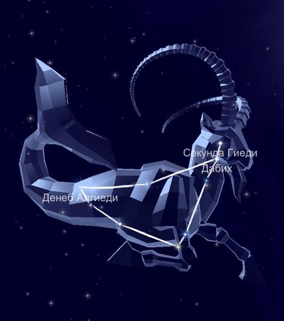

В южном полушарии неба уверенно расположилось знаменитое созвездие Водолей. Поскольку охватывает 980 квадратных градусов, стоит на 10 месте среди всех звёздных частей. Из-за огромной площади граничит с множеством южных созвездий. Его название означает того, кто несёт чашу воды, проще говоря, водоноса.
Миф о происхождении.
Это зодиакальное созвездие, подобно Рыбам, возникло вследствие неожиданного появления стоглавого огнедышащего чудовища Тифона. Вакх (Дионис), пировавший в это время на берегу Нила, прыгнул в воду. Та часть его туловища, которая оказалась под водой, превратилась в рыбу, а верхняя часть туловища превратилась в козла. Отсюда он увидел, что Тифон уже готов был разорвать Юпитера (Зевса) на части. В этот момент Козерог пронзительно свистнул, испугав Тифона. В благодарность за спасение жизни Юпитер поместил Вакха в его новом обличии на небесах.
Звёзды, образующие созвездие Козерог.
Интересно, что яркие элементы составляют фигуру козы, а точнее, они указывают на ту или иную её часть.
Самая яркая в области Дельта — Денеб Альгеди, что значит хвост козы.
Второе место, по праву, принадлежит Бете под названием Дабих, то есть мясник.
Третье место принадлежит Альфе, которая на участке отображает козлёнка. На самом деле, является двойной оптической звездой. Затем следует Гамма — Нашира, в переводе значит счастливая.
Дзета принадлежат к двойным звездам.
Тета — Дорсум, что означает спина козы, является белым карликом главной последовательности.
А вот Омега в созвездии изображает живот.
Пси — карлик жёлто-белого цвета.
Наконец, Йота представляет собой жёлтый гигант.
Так как видимость области приходится на широте от +62 до -90 градусов, то созвездие Козерог можно наблюдать из южных и центральных районов России. Следует учитывать, что лучшие условия для этого отмечаются в июле и августе.
|

|